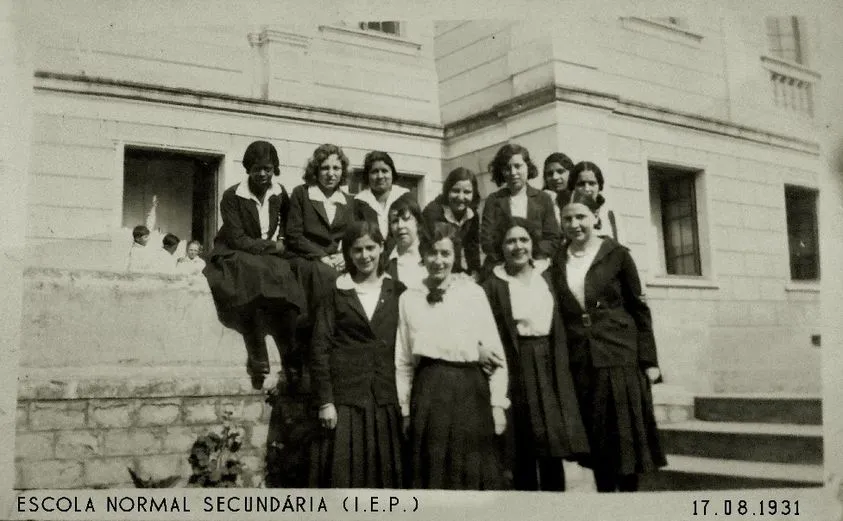
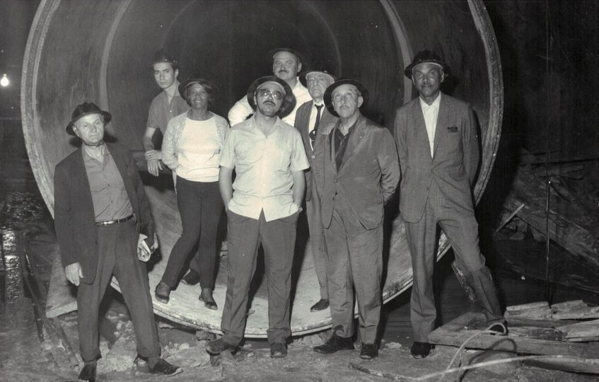

“A universidade não era pensada para mulheres e nem para pretos. Pense: foi uma mulher preta, pobre,
filha de escravos libertos que sobreviveu em uma turma com homens brancos da elite. Foi uma batalha
muito árdua e significativa.”
Citação de Lindamir Casagrande - Doutora em estudos interdisciplinares sobre mulheres, gênero e feminismos
A trajetória de Enedina Alves Marques
A trajetória de Enedina começa com a chegada de seus pais em Curitiba, em 1910.
Sabe-se que a mãe de Enedina, que era chamada de Dona Duca no bairro, trabalhava como lavadeira.
Enedina Alves Marques nasceu em 1913, três anos depois da mudança dos pais.
Foi na década de 1920 que a vida da menina começaria a mudar, assim que sua mãe conseguiu um
emprego na casa do delegado e major Domingos Nascimento Sobrinho.
Domingos tinha uma filha da mesma idade de Enedina, chamada Isabel. Bebeca, como era conhecida,
foi uma menina com acesso à educação desde cedo.
E para que Bebeca não ficasse sozinha na escola, o delegado Domingos pagava para que Enedina
estudasse nos mesmos colégios que ela e lhe fizesse companhia.
Dessa forma, Enedina foi alfabetizada na Escola Particular da Professora Luiza Dorfmund entre
1925 e 1926. Depois, ingressou na escola normal, equivalente ao atual ensino médio, e se formou
em 1931.

Enedina e suas colegas na formatura da escola, em 1931.
Fonte: turistoria.com.br
Como Enedina se tornou engenheira
Em 1938, Enedina deu seu primeiro passo em direção à engenharia. Ela começou a fazer o curso complementar em pré-engenharia no Ginásio Paranaense no período noturno.
Depois de ter concluído o curso complementar, Enedina ingressou na faculdade de engenharia da Universidade Federal do Paraná em 1940.
A formatura aconteceu em 1945, e isso consolidou Enedina como a primeira mulher a se formar em engenharia no estado do Paraná e a primeira mulher negra a se formar engenheira no Brasil.
Na turma de Enedina, se formaram mais trinta e dois engenheiros, todos homens e brancos.
Antes dela, apenas outras duas pessoas negras tinham concluído o curso: Otávio Alencar, em 1918, e Nelson José da Rocha, em 1938.
Dentre as principais obras de Enedina Alves Marques, podemos citar a Usina Capivari-Cachoeira, considerada por muitos como seu maior feito como engenheira, o Colégio Estadual do Paraná e a Casa do Estudante Universitário de Curitiba.

Enedina durante a construção da Usina Capivari-Cachoeira. Fonte: CREA-PR. Fonte: turistoria.com.br